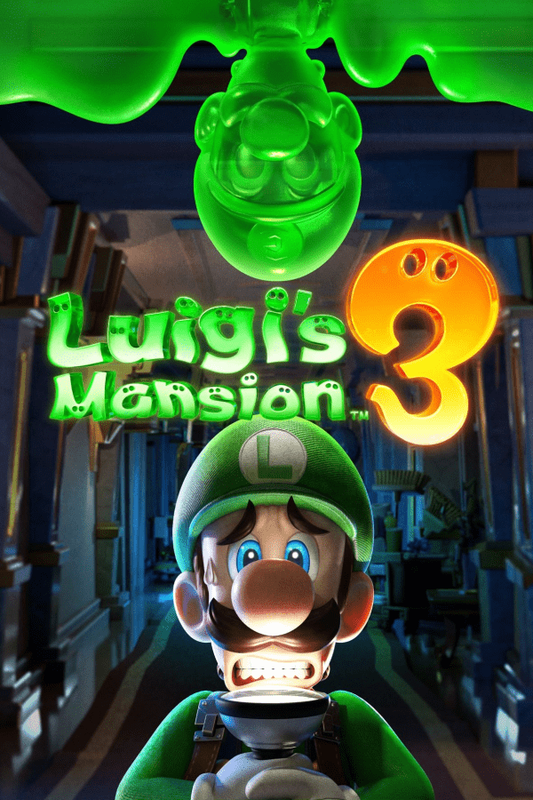

Luigi's Mansion 3
Luigi's Mansion 3
Details
|  | |
| Playtime | Not Played |
| Last Activity | Never |
| Added | 4/29/2025 6:52:38 |
| Modified | 4/30/2025 7:58:13 |
| Completion Status | Not Played |
| Library | Playnite |
| Source | |
| Platform | Nintendo Switch |
| Release Date | 10/31/2019 |
| Community Score | |
| Critic Score | 86 |
| User Score | |
| Genre | Action-adventure |
| Developer | Next Level Games |
| Publisher | Nintendo |
| Feature | Multiplayer Single Player |
| Links | Wikipedia Official website |
| Tag | [People] artist: Barret Chapman [People] composer: Chad York [People] composer: Darren Radtke [People] designer: Devon Blanchet [People] designer: Jason Carr [People] director: Bryce Holliday [People] producer: Alex MacFarlane [People] producer: Bjorn Nash [People] producer: Kensuke Tanabe [People] programmer: Brian Davis [People] writer: Ryunosuke Suzuki |
Description
Luigi's Mansion 3 is a 2019 action-adventure video game developed by Next Level Games and published by Nintendo for the Nintendo Switch. It is the third installment in the Luigi's Mansion series following Luigi's Mansion: Dark Moon (2013). The game sees players taking on the role of Luigi who must explore a hotel run by ghosts and save Mario and the others after they are tricked into visiting it for a vacation by King Boo.
Alongside a number of returning gameplay elements from the previous installments, the game incorporates new features, including additional moves for ghost catching, an ectoplasmic doppelgänger of Luigi known as Gooigi, and expanded multiplayer functionality that allows for players to engage in cooperative and competitive gameplay both locally and online. The game received positive reviews from critics and was nominated for several awards, winning the award for "Best Family Game" at The Game Awards 2019. The game has sold 14.25 million copies as of March 2024.
Gameplay
Luigi's Mansion 3 is an action-adventure game, in which players control the character of Luigi from a fixed third-person perspective, as they capture ghosts across a large hotel setting. The game features two modes of gameplay – a single-player story mode, and a set of multiplayer game modes – in which ghost catching functions in the same manner as previous installments: players stun ghosts with Luigi's Strobulb, snag them with his Poltergust, and weaken their health down to zero in order to capture them.
Single-player
In the single-player story mode, players explore a large hotel with seventeen floors – each floor consists of a different theme and atmosphere, as well as a variety of ghosts, including a boss ghost that the player must defeat. Some of the first floors, such as Floor 2, do not have a theme. Unlike the story mode of Dark Moon, which focused on pre-defined mission structure of gameplay across several areas, Luigi's Mansion 3 is more open-ended allowing for greater exploration of the game's setting, with the only restriction being that players cannot explore floors in the hotel via the elevator until they have found the button that allows access to it; the hotel's main lobby and basement are the only floors to have a staircase between them that circumvents the need for the elevator.
Treasure can be found during exploration of the hotel's floor from various objects and solving some puzzles. Luigi can find coins (worth 1), banknotes (worth 5), gold bars (worth 20), and pearls (worth 100) as well as bags of money containing many hundreds of coins. He can also find special gems on each floor, alongside the capture of Boos, a regular enemy in the Mario series, while Luigi can find hearts to recover health lost from the attacks of ghosts and other environmental hazards. Some of the features introduced by Dark Moon are available in the game, including a stun charge function that can make ghost catching easier, and the Dark-Light Device, a blacklight function that can reveal objects that have become invisible (after capturing Spirit Orbs, which cause the invisibility) and animate certain portraits. It can also bring possessed items, such as possessed chests or rubbish bins, back to normal. New to the series include new functions to the Poltergust – an area burst attack that can help keep multiple enemies back, as well as blow away furniture to reveal treasure; a suction cup attachment, which allows the player to fire a plunger onto obstacles and then remove them by using the Poltergust on the cup's cord; and a slam attack, which allow players to repeatedly smash ghosts they are capturing to the ground, both for greater damage as well as a weapon to hit other ghosts around them.
The most notable addition to the game is Gooigi – an ectoplasmic doppelgänger of Luigi previously introduced in the 3DS remake of the original Luigi's Mansion. Gooigi can conduct similar moves to those of his real counterpart and can be controlled by the player (via switching between Luigi and Gooigi) or a second player in local co-op. Gooigi can be used by the player to help in battles and with solving some of the game's puzzles, some of which require the use of Gooigi and Luigi to complete. Unlike Luigi, Gooigi can squeeze through gaps in vents and grills, and walk across spiked floors, but is weaker than his real counterpart and will instantly lose his physical form if he comes into contact with water or fire.
The game's multiplayer mode allows for up to eight players to play together locally and online. In this mode, players can engage in cooperative gameplay through "ScareScraper", a returning feature from Dark Moon, or competitive team matches in "ScreamPark". Both modes use the same style of controls in the single-player mode, with players able to control four colour variations (green, purple, orange or blue) of Luigi or Gooigi. ScareScraper focuses on cooperative teamwork between players to clear out each of the five or ten floors of a randomly generated high-rise building by seeking out the ghosts hiding on each floor. "ScreamPark" focuses on team-based matches - one side as Team Luigi, the other as Team Gooigi - and scoring points in three different match types: Ghost Hunt, in which teams score points by catching ghosts, with tougher ghosts worth more points; Cannon Barrage, in which teams score points by securing cannonballs, some held by ghosts, loading them into a cannon and firing them at targets, with trickier targets scoring more points; and Coin Floating, in which teams use inflatables to collect coins that drop in a pool, avoiding mines that are dropped as well or lose the coins in their possession and pop the inflatable making them need to blow another one up allowing their opponents to steal them.
Plot
The Mario Bros. have been invited to The Last Resort, a luxurious high-rise and Art Deco-styled hotel nestled in a mountainside area, and decide to visit it for a vacation, accompanied by Princess Peach, Luigi's pet ghost dog Polterpup and a trio of Toads that serve as the former's entourage. After arriving and settling in, Luigi wakes up during the night to find the hotel transfigured to appear haunted and the others missing. He discovers that the hotel's ghostly owner, Hellen Gravely, lured the group there as part of a trap by King Boo, whom she idolizes and had freed from Professor E. Gadd's custody after his recapture in the previous game. King Boo announces his plot to take revenge on Luigi and his friends for his past defeats by imprisoning them in portraits, but Luigi narrowly escapes to the basement through a laundry chute. With the help of Polterpup, who also avoided capture, Luigi explores the basement and comes across E. Gadd's car in The Last Resort's parking garage and finds his latest Poltergust inside it. Using the device, Luigi follows Polterpup to the lobby and finds that the professor was also captured.
Searching the surrounding area, Luigi comes across E. Gadd's Dark-Light Device in a safe and uses it to free him. Setting up a portable laboratory in the garage, E. Gadd explains how he was also tricked into visiting the hotel and taken hostage by Hellen, who then plundered his latest ghost collection to staff the building. Believing that Luigi's friends are likely trapped on the upper floors, E. Gadd recommends that Luigi finds the elevator buttons for the upper floors that had been taken from the main elevator after he secures two from a ghost he had defeated earlier. While exploring the floors, each featuring a different theme to them, Luigi is supported further by some of E. Gadd's latest creations – the Virtual Boo communication device and Gooigi, an ectoplasmic doppelgänger of Luigi who serves as the professor's ghost-catching protégé. Left without any other choice, Luigi begins his search for the missing elevator buttons in order to visit each of the Last Resort's many floors.
Coming across and defeating a variety of different ghosts throughout the hotel, Luigi reclaims the elevator buttons and rescues the Toads from them, the former of whom are then kept in E. Gadd's lab for safety. Eventually, he reaches the top floor where he confronts a furious Hellen and manages to defeat her before rescuing Mario. Luigi then follows him to the roof where they find Peach's portrait. Upon freeing her, the group is confronted by King Boo, having lost faith in Hellen and her staff earlier and prepares to imprison them and their allies in a single portrait. After being inadvertently saved by Polterpup at the last second, Luigi, aided by Gooigi, finds himself forced to defeat King Boo once again. During the battle, King Boo enlarges the portrait's frame in an attempt to pull in The Last Resort with Luigi still on the roof. Luigi soon triumphs over King Boo and manages to recover the portrait moments before the whole hotel crumbles to the ground from its endured strain. After freeing his friends from the portrait, the ghosts Luigi had captured escape from their containment in E. Gadd's now-destroyed lab and attempt to attack, but they suddenly become social when the jewel from King Boo's crown vanishes, suggesting that they were all brainwashed. E. Gadd, seeing the ghosts upset over their home's unintended destruction, elects for the group to build a new hotel, while the recaptured King Boo is returned to his custody alongside Hellen. Depending on how much money Luigi collected throughout his adventure, the new hotel, which has been remade in E. Gadd's image, will be different in size. After the grand re-opening, Luigi and his friends return home.
Development
Luigi's Mansion 3 is developed by Next Level Games, who previously developed Luigi's Mansion: Dark Moon for Nintendo. The game was originally planned as a Wii U title, with early prototypes introducing the Slam and Burst as new abilities; however, development started for the Nintendo Switch system in earnest following the completion of Next Level Games' Metroid Prime: Federation Force. The change in setting from a mansion to a hotel was done so that players could have "three-dimensional exploration" with Kensuke Tanabe explaining that they "wanted players to be able to visualize how the hotel was set up". Despite the new setting, the team deliberately made the choice for some of the settings to "make it as unexpected and even un-hotel-like as possible". The team noted that as long as they connected the settings through a traditional hotel setup they could get away with the diverse settings. Some features that were previously present in or planned for the Nintendo 3DS remake of the original Luigi's Mansion were expanded on for the third installment, such as same screen local co-op play and the aforementioned new abilities. Prior to the game's formal announcement, Luigi's new gadget, the Poltergust G-00, was shown for the first time in the August 2018 Super Smash Bros. Ultimate Nintendo Direct while Luigi was introduced. The Poltergust G-00 was also incorporated into Luigi's moveset, now being able to grab opponents from a distance with the Suction Shot. His new Final Smash involves sucking opponents in with it and immediately ejecting them.
Luigi's Mansion 3 was announced during a Nintendo Direct presentation on September 13, 2018, with the title at the time being listed as tentative and planned for release in 2019. The game was a part of Nintendo's E3 2019 showcase, with a new trailer highlighting the premise, gameplay mechanics, and game modes, including the return of the online multiplayer mode, ScareScraper. A demo was also made available to play on the show floor. Nintendo of America's Nate Bihldorff stated that the game's primary campaign would be longer than that of Dark Moon. He also stated that the finalized title was changed to a simple number "3" rather than a subtitle because the time gap between the second and third installments was much shorter to the point of calling the series an established franchise, as opposed to the 12-year gap between the first and second installments. A new trailer shown during the September 4, 2019 Nintendo Direct showcased some areas of the hotel setting and debuted the ScreamPark, a new party-oriented game mode for up to eight players on a single console. Luigi's Mansion 3 was released on October 31, 2019.
Reception
Luigi's Mansion 3 received "generally favorable" reviews from critics, according to review aggregator website Metacritic. Chelsea Stark of Polygon praised the use of Gooigi, as well as the variety of levels throughout the game, saying that "this is our scaredy-cat hero’s best adventure yet". Ryan McCaffrey at IGN also praised the level design and variety, saying: "Luigi's Mansion 3 is so fun, charming, and smartly designed that I hope we get more than three of these every 20 years."
Sales
By March 2024, Luigi's Mansion 3 had sold 14.25 million copies worldwide, making it one of the best-selling games for Nintendo Switch.